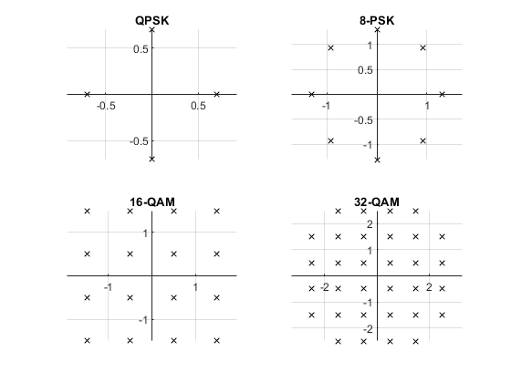

Contents
clc; clear; close all;
(a) Create a vector of the complex points in the constellation.
d_min = 1;
M_QPSK = 4;
theta_QPSK = 2*pi/M_QPSK;
A_QPSK = d_min / abs(1 - exp(1j * theta_QPSK));
s_QPSK = A_QPSK * exp(1j * (0:M_QPSK-1) * 2*pi / M_QPSK);
disp('QPSK Constellation Points:');
disp(s_QPSK);
M_8PSK = 8;
theta_8PSK = 2*pi/M_8PSK;
A_8PSK = d_min / abs(1 - exp(1j * theta_8PSK));
s_8PSK = A_8PSK * exp(1j * (0:M_8PSK-1) * 2*pi / M_8PSK);
disp('8-PSK Constellation Points:');
disp(s_8PSK);
M_16QAM = 16;
I_16QAM = -1.5:1:1.5;
Q_16QAM = -1.5:1:1.5;
[I_grid, Q_grid] = meshgrid(I_16QAM, Q_16QAM);
s_16QAM = I_grid(:) + 1j*Q_grid(:);
disp('16-QAM Constellation Points:');
disp(s_16QAM);
M_32QAM = 32;
I_32QAM = -2.5:1:2.5;
Q_32QAM = -2.5:1:2.5;
[I_grid_32, Q_grid_32] = meshgrid(I_32QAM, Q_32QAM);
s_32QAM = I_grid_32(:) + 1j*Q_grid_32(:);
corner_indices = find(abs(I_grid_32(:)) == 2.5 & abs(Q_grid_32(:)) == 2.5);
s_32QAM(corner_indices) = [];
disp('32-QAM Constellation Points:');
disp(s_32QAM);
QPSK Constellation Points:
0.7071 + 0.0000i 0.0000 + 0.7071i -0.7071 + 0.0000i -0.0000 - 0.7071i
8-PSK Constellation Points:
Columns 1 through 4
1.3066 + 0.0000i 0.9239 + 0.9239i 0.0000 + 1.3066i -0.9239 + 0.9239i
Columns 5 through 8
-1.3066 + 0.0000i -0.9239 - 0.9239i -0.0000 - 1.3066i 0.9239 - 0.9239i
16-QAM Constellation Points:
-1.5000 - 1.5000i
-1.5000 - 0.5000i
-1.5000 + 0.5000i
-1.5000 + 1.5000i
-0.5000 - 1.5000i
-0.5000 - 0.5000i
-0.5000 + 0.5000i
-0.5000 + 1.5000i
0.5000 - 1.5000i
0.5000 - 0.5000i
0.5000 + 0.5000i
0.5000 + 1.5000i
1.5000 - 1.5000i
1.5000 - 0.5000i
1.5000 + 0.5000i
1.5000 + 1.5000i
32-QAM Constellation Points:
-2.5000 - 1.5000i
-2.5000 - 0.5000i
-2.5000 + 0.5000i
-2.5000 + 1.5000i
-1.5000 - 2.5000i
-1.5000 - 1.5000i
-1.5000 - 0.5000i
-1.5000 + 0.5000i
-1.5000 + 1.5000i
-1.5000 + 2.5000i
-0.5000 - 2.5000i
-0.5000 - 1.5000i
-0.5000 - 0.5000i
-0.5000 + 0.5000i
-0.5000 + 1.5000i
-0.5000 + 2.5000i
0.5000 - 2.5000i
0.5000 - 1.5000i
0.5000 - 0.5000i
0.5000 + 0.5000i
0.5000 + 1.5000i
0.5000 + 2.5000i
1.5000 - 2.5000i
1.5000 - 1.5000i
1.5000 - 0.5000i
1.5000 + 0.5000i
1.5000 + 1.5000i
1.5000 + 2.5000i
2.5000 - 1.5000i
2.5000 - 0.5000i
2.5000 + 0.5000i
2.5000 + 1.5000i
(b) Compute Eb.
compute_Eb = @(s, m) mean(abs(s).^2) / log2(m);
Eb_QPSK = compute_Eb(s_QPSK, M_QPSK);
Eb_8PSK = compute_Eb(s_8PSK, M_8PSK);
Eb_16QAM = compute_Eb(s_16QAM, M_16QAM);
Eb_32QAM = compute_Eb(s_32QAM, M_32QAM);
fprintf('E_b for QPSK: %f\n', Eb_QPSK);
fprintf('E_b for 8-PSK: %f\n', Eb_8PSK);
fprintf('E_b for 16-QAM: %f\n', Eb_16QAM);
fprintf('E_b for 32-QAM: %f\n', Eb_32QAM);
E_b for QPSK: 0.250000
E_b for 8-PSK: 0.569036
E_b for 16-QAM: 0.625000
E_b for 32-QAM: 1.000000
(c) Compute bits per dimension for each constellation.
bpd_QPSK = log2(M_QPSK) / 2;
bpd_8PSK = log2(M_8PSK) / 2;
bpd_16QAM = log2(M_16QAM) / 2;
bpd_32QAM = log2(M_32QAM) / 2;
fprintf('Bits per dimension for QPSK: %f\n', bpd_QPSK);
fprintf('Bits per dimension for 8-PSK: %f\n', bpd_8PSK);
fprintf('Bits per dimension for 16-QAM: %f\n', bpd_16QAM);
fprintf('Bits per dimension for 32-QAM: %f\n', bpd_32QAM);
Bits per dimension for QPSK: 1.000000
Bits per dimension for 8-PSK: 1.500000
Bits per dimension for 16-QAM: 2.000000
Bits per dimension for 32-QAM: 2.500000
(d) Which of the four is the most power-efficient?
Eb_values = [Eb_QPSK, Eb_8PSK, Eb_16QAM, Eb_32QAM];
modulations = {'QPSK', '8-PSK', '16-QAM', '32-QAM'};
[~, idx_min_Eb] = min(Eb_values);
fprintf('\nThe most power-efficient modulation is %s.\n', modulations{idx_min_Eb});
The most power-efficient modulation is QPSK.
(e) Which of the four is the most spectrally efficient?
bpd_values = [bpd_QPSK, bpd_8PSK, bpd_16QAM, bpd_32QAM];
[~, idx_max_bpd] = max(bpd_values);
fprintf('\nThe most spectrally efficient modulation is %s.\n', modulations{idx_max_bpd});
The most spectrally efficient modulation is 32-QAM.
(f) Is it true that in every case a higher spectral efficiency corresponds to a higher power requirement? Identify any exceptions to this.
fprintf('\nComparison of Modulation Schemes:\n');
for i = 1:length(modulations)
fprintf('%s: E_b = %f, Bits per symbol per dimension = %f\n', ...
modulations{i}, Eb_values(i), bpd_values(i));
end
fprintf('\nRelationship between spectral efficiency and power requirement:\n');
for i = 1:length(modulations)-1
delta_bps = bpd_values(i+1) - bpd_values(i);
delta_Eb = Eb_values(i+1) - Eb_values(i);
fprintf('From %s to %s: Δbps = %f, ΔE_b = %f\n', ...
modulations{i}, modulations{i+1}, delta_bps, delta_Eb);
end
Comparison of Modulation Schemes:
QPSK: E_b = 0.250000, Bits per symbol per dimension = 1.000000
8-PSK: E_b = 0.569036, Bits per symbol per dimension = 1.500000
16-QAM: E_b = 0.625000, Bits per symbol per dimension = 2.000000
32-QAM: E_b = 1.000000, Bits per symbol per dimension = 2.500000
Relationship between spectral efficiency and power requirement:
From QPSK to 8-PSK: Δbps = 0.500000, ΔE_b = 0.319036
From 8-PSK to 16-QAM: Δbps = 0.500000, ΔE_b = 0.055964
From 16-QAM to 32-QAM: Δbps = 0.500000, ΔE_b = 0.375000
Constellation Plots
figure;
subplot(2,2,1);
plot(real(s_QPSK), imag(s_QPSK), 'kx');
title('QPSK');
grid on;
axis equal;
axh = gca;
axh.XAxisLocation = 'origin';
axh.YAxisLocation = 'origin';
axh.Box = 'off';
subplot(2,2,2);
plot(real(s_8PSK), imag(s_8PSK), 'kx');
title('8-PSK');
grid on;
axis equal;
axh = gca;
axh.XAxisLocation = 'origin';
axh.YAxisLocation = 'origin';
axh.Box = 'off';
subplot(2,2,3);
plot(real(s_16QAM), imag(s_16QAM), 'kx');
title('16-QAM');
grid on;
axis equal;
axh = gca;
axh.XAxisLocation = 'origin';
axh.YAxisLocation = 'origin';
axh.Box = 'off';
subplot(2,2,4);
plot(real(s_32QAM), imag(s_32QAM), 'kx');
title('32-QAM');
grid on;
axis equal;
axh = gca;
axh.XAxisLocation = 'origin';
axh.YAxisLocation = 'origin';
axh.Box = 'off';
